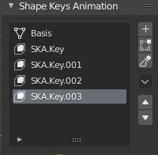

DuSKA - Duduf Shape Keys Animator
DuSKA is an add-on for Blender to help with animation of shape keys.
It is very useful for:
- Fake Stop-Motion/Claymation.
- Post-Animation corrective Shape Keys with rigged characters.
Without this add-on, to animate Shape Keys in Blender, you’d have to animate all of their values between 0 and 1, taking care of the mix between them if you’d like to interpolate. DuSKA provides a very simple animatable list with the Shape Keys where you can just select the keys to activate them; DuSKA takes care of the values and interpolations for you.
Installation
DuSKA is installed as any other add-on in Blender: in Preferences ▸ Add-ons, choose install and select the DuSKA .zip archive. Don’t forget to enable the add-on once installed.
Use
3D View ▸ Sidebar ▸ Item tab ▸ Shape Keys Animation

When a compatible object is selected (Curve or Mesh), you can add new Shape Keys with the Shape Keys Animation panel.
- + Add Key adds a new Keyframe from the basis.
- ⊕ Add Key from mix adds a new Keyframe from the current mix.
- - Remove Key removes the selected SKA key.
Tip
DuSKA controls and animates only the Shape Keys which name starts with SKA.. To convert existing Shape Keys to/from animated Shape Keys, just rename them.
Other Shape Keys (included the basis) will be listed as Not animatable.
This list of Shape Keys can be animated, as any other property; you can also add a driver to control it.
When the keyframes are set to Constant interpolation, there will be no transition between keys, which is better for claymation. When set to Linear interpolation (the default), DuSKA will interpolate between keys, which may be better for corrective Shape Keys.
License
Software
The software this documentation is referring to is licensed under the GNU General Public License.
Copyright (C) 2020 Nicolas Dufresne and Contributors.
This program is free software; you can redistribute them and/or modify them under the terms of the GNU General Public License as published by the Free Software Foundation; either version 3 of the License, or (at your option) any later version.
This program is distributed in the hope that it will be useful, but WITHOUT ANY WARRANTY; without even the implied warranty of MERCHANTABILITY or FITNESS FOR A PARTICULAR PURPOSE. See the GNU General Public License for more details.
You should have received a copy of the GNU General Public License along with this program . If not, see http://www.gnu.org/licenses/.


This Documentation
Copyright (C) 2020 Nicolas Dufresne and Contributors.
Permission is granted to copy, distribute and/or modify this document under the terms of the GNU Free Documentation License, Version 1.3 or any later version published by the Free Software Foundation;
with no Invariant Sections, no Front-Cover Texts, and no Back-Cover Texts.
A copy of the license is included in the section entitled “Documentation License”.